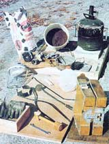
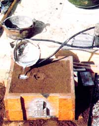
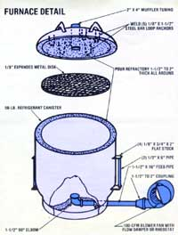
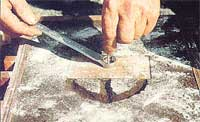
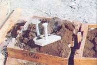
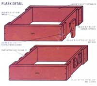

Issue # 73- January/February 1982
You can make your own shop tools and probably earn a living besides if you...
STAFF PHOTOS
It shouldn't take more than $30 or so to
outfit a home foundry... and you can raid your kitchen or
workshop for goodies, too!
The molten alloy is poured into the sprue, and will come out
the riser.
Remove the pattern by "rapping"
it in all directions, then lifting it. Notice the three
runners and terminal gates.
The finished billet can now be
machined.
Dave Gingery
It's funny how, sometimes, an event will sort of get stuck in your mind. I can clearly remember, some 20 years ago, holding a complicated-looking-and expensive-machine part in my hand and thinking how difficult it must be to form that piece. Today, however, I'm able not only to duplicate that part (for pennies), but to make just about any component I need-to equip my shop, fix my car, or merely tickle my fancy-by going no farther than my own back yard!
Did I buy a tool-and-die company? Well, not quite . . instead, you might say I "founded" one, for a total investment of about $30 and the time it took me to learn, through experience, the basics of home metal casting.
FIRST, YOU GET A CHICKEN...
Believe it or not, it's fairly easy to establish a compact foundry at home, since-if you enjoy puttering around the house-you probably already have on hand most of what you need to build one. And metal casting (a craft that's been practiced for thousands of years by so-called "primitive" people) harbors no secrets: If you can whittle a whistle, you can make a pattern ... if you've ever built sand castles, you can make a mold ... and if you can boil water, you can melt metal and pour it into that mold. It really is that simple.
Of course, I never intended to take up foundry work just for fun. Someone (whose name is long forgotten but whose message has hung on) once told me that a metal lathe is the only machine in a shop that can duplicate itself. So, thinking about the old chicken soup recipe that starts out "first you get a chicken", I figured that if I could build a lathe-using my new casting skills-nothing would prevent me from going hog-wild and manufacturing all the other tools I needed to outfit my workshop.
However, I hadn't counted on the unsolicded business that came my way once I'd set up my home foundry (and has often kept me too happily busy to cast tools for myself). When word got around that I was casting metal, it seemed the whole dang county was beating a path to my door, looking for me to make kitchen utensils ... repair tool parts ... or fabricate structural members (for windplants, greenhouses, geodesic domes, and more) in exchange for goods, services, or cold cash. And after a while I began casting distinctive objects of art that-with the help of a simple on-site foundry demonstration-paved my way with green at local flea markets and crafts festivals. where enthusiastic onlookers fairly tripped over themselves to better their view ... and lighten their billfolds!
THE BASIC COMPONENTS
When I said it doesn't take much material to set up a small foundry, I meant it. For example, wood charcoal is-historically speaking-the "classic" foundry fu el... though the casting industry now uses natural gas almost exclusively. But after an unsuccessful attempt at using a homemade gas burner, I switched to charcoal briquets and have stuck with them eversince.
Besides being inexpensive and readily available, the solid fuel can fire a foundry that's set up in a rural area, where there might not be a gas line. Better yet, the charcoal can even be manufactured right on the homestead (simply cover ricks of hardwood with earth and allow them to smolder from within for several weeks). Doing it yourself has an advantage other than low cost, too, because homemade charcoal doesn't contain the binding agents-found in store-bought briquets-that eventually create airflow-blocking klinkers in the furnace. (The charcoal-making process also yields gaseous and liquid by-products-such as methane, wood alcohol, and other volatiles-that can have value in themselves.)
Naturally, to use the fuel efficiently, I needed a suitable oven... and I built just such a furnace, out of scrap, for about $20. It's nothing more than a drum, with a removable lid, that's lined all around with about two inches of castable refractory ... has an air-feed tube built into its bottom ... and is equipped with an adjustable-for-flow blower to supply the draft necessary to create intense heat.
Before constructing my furnace, I first determined how large it would have to be to handle the parts I planned to make. I'd suggest that a beginner locate a vessel at least the size of a 50-pound refrigerant container, then try to salvage a 30-pound canister from the same source.
Perhaps better yet, if you can find a 30-gallon drum and a 5-gallon paint pail, you can build a furnace that'll be tall enough to accommodate most pieces of melting scrap, no matter how oddly they may be shaped. (When doing aluminum casting, which, because of the low temperatures involved, is the least difficult-and safest-foundry craft, I melt down discarded auto pistons almost exclusively. Most garages will let me have them free for the taking, and they're made of high-quality alloy. Many of them do, however, come with connecting rods attached, and these -along with any other ferrous parts-must be fished out of the melting pot before the aluminum is poured.)
When you've selected a suitable furnace vessel, prepare it by first slicing off its lid-near the uppermost seam-then cutting a hole in its side, close to the bottom, large enough to accept a 16" section of 1-1/2" feed pipe. Thread a 90° elbow to the inside end of this nipple, then weld the assembly to the canister wall, with the elbow pointing upward. Next, cut a hole in the middle of the lid section, and weld a short length of 2" muffler tubing in place, allowing it to protrude below the lid's lip slightly. Then fasten some handles-made from short pieces of 1/8" X 3/4" flat stock and 6" pieces of 1/2" pipe-to the sides of the container.
[EDITOR'S NOTE: This design should not, of course, be thought of as carved in stone. Forexample, one of MOTHER's experimenters changed it to suit his taste by placing a 2" pipe inside a 6" well casing and welding center-bored steel-plate doughnuts, one at its top and another at the bottom, to form an air-manifold assembly. By terminating the feed pipe at the casing wall, boring a series of 5/32" holes through the manifold's upper plate, and fastening a spring-loaded trapdoor over the opening at the bottom, he effectively created a furnace that fed air evenly and provided easy topside ash cleanout.]
Because of the extreme temperatures generated within the furnace, its floor, lid, and inner walls must be lined with refractory material. Paco Cast-manufactured by the North Stale Pyrophyllite Co., Inc., Dept. TMEN, P.O. Box 7247, Greensboro, North Carolina 27407-is a good castable refractory product. Simply mix up the necessary quantity, following the instructions on the bag, then fill the bottom of your furnace container until the material reaches the top of the air-feed elbow (it'll usually do so at a depth of 1-1/2 to 2 inches).
Next, coat the outer skin of the smaller of your two vessels with oil (to allow for its easy removal after the wall lining has set) and place it upright on top of the elbow and the "pasty" base pour, making sure that it's centered evenly within the furnace drum. Then go on to fill the wall cavity with refractory as you did the bottom, but tamp it down as you pour to discourage the formation of air bubbles. Finish the job by inverting the lid and lining it, to the level of the muffler pipe, in a similar manner. (Hint: Weld some short steel bar loops to the inside of the cap to give the mix something to grip as it sets.) When the refractory is dry, remove the inner vessel and "cure" the furnace by burning charcoal in it-closed-for at least 12 hours.
With this done, cut a piece of 1/8" expanded metal into a disk just large enough to slip inside the furnace, then attach a blower (my "squirrel cage" puts out about 100 cubic feet per minute and uses a sliding flap damper to regulate flow ... although an old hair dryer with a rheostat control would probably work just about as well) to the feed pipe . . . using a coupling, a welded plate, or even a piece of bicycle inner tube if that's what it takes to make the hookup.
You can probably construct the second most important foundry component-the flask-yourself, too. It's really nothing more than a two-part open-ended box which holds the sand that forms the mold. The size of your flask (its top section is called the cope , and its bottom the drag ) will, of course, depend on the size of the castings you hope to pour... and you can fit a simple four-sided cheek between the components to increase the flask's depth if necessary. However, I'll tell you how to put together a beginner's box that'll do for almost any job you'll care to tackle for a while.
First, find yourself some clear, straight 1 X 4 and cut eight sections from it ...four about 10" in length and four more 12" long. Then trim off eight 2" slices and make the pair of boxes shown in the diagram, using glue and No. 6 X 1-1/4" wood screws to hold the boards together. (If you decide to build a larger flask, cut a 1/4" X 1/2" rabbet into the inner face of both the cope and the drag, all around, to give the sand something to hold on to.)
Now-and be careful with this step-make two sets of keys (as shown in the accompanying drawing) for the sides of the flask. It's important that the cope and drag fit consistently flush, so the mold will separate cleanly at the parting line. (Some folks prefer using dowel pins or rods instead of tapered keys, since they leave less room for error when lifting.) Finally, seal all the wood with a good waterproofing agent.
You'll also need to fashion a riddle and a molding bench , but both are easy to make. The first is merely a sand filter, built by nailing together a 16" X 16" frame made from 2 X 4 and tacking some 1/4" hardware cloth across it (1/8" grid material can be used for fine detail castings). The molding bench is a 2 X 4 wooden frame about 36" square, with a 1/2" plywood bottom. Finally, make at least two pattern boards , by cutting plywood sheets slightly larger than your flask and coating them with wood sealer.
Most of the remaining tools and supplies can be found in your own kitchen, workshop, or-if you want to get fancy-at an arts and crafts supply store. You'll need a wooden hammer handle about 10" long for a rammer ... a piece of 1/2" conduit or tapered dowel, 6" in length, to serve as a sprue pin (don't worry about these terms ... you'll understand what the tools do later) ... another smooth dowel, 1/2" X 6", for a riser pin ... an assortment of small spoons and knife blades ... a sprinkling can (I use a plastic milk jug with holes drilled in its lid) .. . an iron rod with a hook bent into one end and a handle into the other ... a 6" cast-iron bean pot to serve as a crucible ... a pair of scissors-type tongs at least 24" long (make them from 1/2" rod, pivoting-at a point closer to the jaws than to the handles-on a 1/4" bolt, and with a curved steel band on each jaw that fits the side of the crucible perfectly) ... a wooden straightedge . . a camel's-hair artist's brush ... a tin (not aluminum) muffin pan, an assortment of iron pots and pans of various sizes, and a small rectangular tin bread pan . . . a rapper (just a large washer with a steel handle welded to it ... or a tuning fork) ... and a skimmer , which is a spoonlike affair with a two-foot rod handle.
You will, of course, also need some casting sand ... which you might as well pick up at a local commercial foundry, since it's hard to locate appropriate indigenous material. I find olivine sand (it's brown in color and contains about 5% bentonite as a bonding agent) to be the best choice, though black Albany sand also works pretty well. You'll want to locate some pumice dust, too, to serve as parting powder (don't try to substitute talcum because it tends to absorb moisture).
MAKE MOLD...
You're now ready to make a simple mold. First, sift the dust from your briquets, place them in the bottom of the furnace over the screen, ignite them, and turn the blower on. Then prepare the crucible by filling it with aluminum scrap (be extra careful-especially when melting pistons-that there's no water trapped in the parts to be melted).
With the coals hot, place the crucible in the furnace and install the lid. While you're waiting for the alloy to melt, prepare about five gallons of sand, in your molding bench, by sprinkling water into it a bit at a time and tossing it with two wooden blocks to bring it to a dry-paste consistency (that is, 5% to 7% moisture) which allows it to remain whole when squeezed, but to break cleanly when released (you'll probably have to put in some practice before you'll be able to recognize this stage). Better yet, mix the sand about 12 hours prior to casting, so that its wicking effect will have time to distribute the moisture evenly.
Next, place a pattern (it can be a component you want to duplicate, or a piece of wood or polystyrene foam you've whittled to a specific shape) on your pattern board, within the molding bench, and dust it lightly by shaking the pumice through a sock. Place the drag upside down over the pattern and-using the riddle-sift your sand into the drag. Pack the grains firmly around the pattern with your fingers.
When it's covered, pour coarse sand on top till the drag box is overfilled. With the rammer, tamp the sand tightly at the corners but somewhat less firmly over the pattern. Use one of the pattern boards to compress the sand into the drag with a downward and right-and-left twisting motion. Strike off the excess material above the edge of the drag with your straightedge, then vent the mold by piercing the sand-using a short length of pointed coat-hanger wire-in several places above and down to the pattern. Scrape all the fallen sand away from the drag with your bread pan.
At this point, check your crucible to see whether the aluminum is melted. If it's bright red, it's too hot . . . and you should reduce the air-feed flow so the molten metal can just simmer while you complete the mold.
Now, go back and flip the drag right side up, redust its face (with the pattern still inside), and place the cope on the drag. Put the riser pin (it's used to compensate for shrinkage during a pour) on the thickest part of the pattern . . . set the sprue pin into the drag sand at a point an inch or two from the pattern ... hold the riddle over the cope ... and repeat the sifting, tamping, and striking procedures as before.
With this done, dig a small pour basin , about an inch deep and an inch from the sprue pin, with a spoon.. . and cut a channel, half as deep, from the pit right to the sprue pin. Vent over the pattern again, then carefully remove the riser and sprue pins, finger-press the sand around the basin (taking care not to let any material fall into the riser ... that is, the hole left by the riser pin) and-slowly and evenly-separate the cope from the drag.
Take your spoon again and dig a runner in the drag sand from the sprue, alongside the pattern, ending in a gate (which is a connecting ditch leading directly to the pattern), and press the sand down as before. (Actually, in some cases, more than one runner and gate might be used.) Now, swab a thin film of water around the edge of the pattern with your brush, and prepare to remove the original by first threading a small wood screw into some convenient part of it, then tapping the screw back and forth and all around with the rapper till the pattern loosens and lifts easily. Repair the mold if it's damaged in any way, blow any sand from the area of the impression, and carefully replace the cope, double-checking its fit. You're now ready to make a pour, but first cover the exposed wood of the molding bench, around the flask, with sand.
... AND POUR A CASTING
Open your furnace and remove any ferrous parts from the crucible with your hook, then skim the slag from the molten aluminum's surface (disturbing the melt as little as possible) and throw it in a waiting iron receptacle. Lift the crucible from the oven with the hook, set it down in an iron frying pan, and grab it firmly with the tongs. Pour the molten alloy into the basin and sprue till it comes out of the riser, then dump any unused fluid aluminum into your muffin pan, to form ingots that you can remelt later.
While waiting to part your mold (it'll take 20 to 30 minutes for the casting to cool), you can resift the surplus sand and store it in a sealable container for next time (do the same with the sand in the mold after the casting is complete) and smother your furnace fire (save the cooled leftover coals ... they'll make your next fire especially easy to start).
Once the time is up, shake out your casting and look it over. Don't be disappointed if the first efforts are a little rough. With practice, you'll be able to knock out work that's consistently suitable for tapping, turning, milling, or any other kind of machining.
SAFETY FIRST!
This is important, so I'm not going to mince words: Always wear leather gloves and boots and eye protection when working with the foundry. Never pour water on molten metal ... always use sand to prevent, or put out, a pouring-related smolder or fire. Work in a well-ventilated area or outdoors, and avoid breathing both the charcoal and the aluminum fumes, because they are toxic. Don't make a pour over bare wood or concrete, and never set your furnace down on a wooden floor ... raise it up on firebrick or refractory. And remember: Keep water-in any amount-out of your crucible!
YOU REAP WHAT YOU SOW
You won't likely manage a perfect pour the first time... in fact, you might have to make quite a few castings before you get each step down pat. I can't help you practice, but I can recommend that you read as much about small-scale founding as possible ... and after a while you'll become proficient at what is probably one of the greatest self-sufficiency skills of all!
EDITOR'S NOTE: David Gingery is writing a series of books entitled Build Your Own Metal Working Shop From Scrap. The first The Charcoal Foundry- details what he has described here . It's available for $6.95 - plus 95 cents shipping and handling - from Mother's Bookshelf, P .O. Box 70, Hendersonville, North Carolina 28791.
MOTHER has a hands-on foundry seminar scheduled for this coming summer... check out the details on pages 90 and 91 .
Should you prefer to purchase-rather than make-your equipment, various supplies are available from Pyramid Products Co., Dept. TMEN, 3736 South 7th Avenue, Phoenix, Arizona 85041 . . or Casting Supply House, Inc., Dept. TMEN, 62 West 47th Street, New York, New York 10036.
|
 |
 |
 |
|
 |
 |
 |